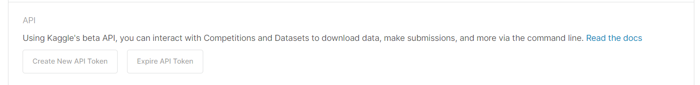

Contents
To build a classifier we need to follow these steps addressed below:
- Prepare the Dataset
- Model architecture
- Loss function and optimization
- Training
- Evaluation
- Improving your model accuracy
- Implementation
Preparing our dataset
Since we are using google collab and our dataset is in kaggle, here is the best way to setup your dataset to avoid large downloading and uploading time.
- Mount google collab to your drive(make sure you have available space in your drive).
- create your kaggle account, navigate to my account and scroll to kaggle api key. 
- Download kaggle api json file, create a folder named kaggle in drive and upload it in the folder.
- Run these commands in your to set enviromental variable and change directory
- Now go to your favorite dataset url in kaggle, click on the three dots on the right and select api download command
- Run the command to download the dataset in your drive throught collab and then unzip using the below command
- Now you have folder paths of the dataset to your drive from collab.
from google.colab import drive
drive.mount('/content/drive')
import os
os.environ['KAGGLE_CONFIG_DIR']='/content/drive/MyDrive/Kaggle/'
%cd '/content/drive/MyDrive/Kaggle/'

!kaggle datasets download -d samaneheslamifar/facial-emotion-expressions
!unzip \*.zip && rm *.zip
Now that we have the dataset ready, we have to generate a dataloader for our model. We should understand that we also need to compose our tranform function to do operations on our data to help our model extract features from the images as much as possible.
t=transforms.Compose([
transforms.RandomRotation(10),
transforms.ToTensor()])
There are a number of tranform operations we can do in order to draw out maximum features. We will use these tranform operations today. Here are more tranform operations that you can experiment. With the help of tranforms our data will be changed according to the composed transform variable. Now we can create a dataloader for both train and validation with the help of torchvison.datasets.ImageFolder class.
batch_size=64
trainloader=torch.utils.data.DataLoader(train_dataset,batch_size=batch_size,shuffle=True)
testloader=torch.utils.data.DataLoader(validation_dataset,batch_size=batch_size,shuffle=True)
I've written my own functions to display images in a grid to see how they look before and after tranformations.
def random4(dataset):
return [dataset[np.random.randint(len(dataset))] for x in range(4)]
def display(image,label,classes):
plt.figure(figsize=(9,9))
plt.subplot(1,4,1)
plt.imshow(image[0].permute(1, 2, 0))
plt.title(classes[label[0]])
plt.subplot(1,4,2)
plt.imshow(image[1].permute(1, 2, 0))
plt.title(classes[label[1]])
plt.subplot(1,4,3)
plt.imshow(image[2].permute(1, 2, 0))
plt.title(classes[label[2]])
plt.subplot(1,4,4)
plt.imshow(image[3].permute(1, 2, 0))
plt.title(classes[label[3]])
def lossgraph(list_loss):
if isinstance(list_loss,tuple):
for i in list_loss:
x=range(len(i))
y=i
plt.plot(x,y,marker ='.')
plt.legend(["train loss", "test loss"])
else:
x=range(len(list_loss))
y=list_loss
plt.plot(x,y,marker ='.')
plt.show()
Model Architecture
Creating your own model is easy.It depends on what your inputs and outputs are.
Since we are trying to create a model which takes an image as an input of size 48x48x3 to classify the image into 7 classes
,we are halfway done creating our model. We can create our own hidden layers (conv2d,maxpool,fully connected) to accept our input to generate only 7 ouputs.
Some formulas are important to calculate how our input size will change after entering next layers so we need to be familiar with this.

This is the architecture that I want to experiment on today .I created this CNN graph using NNSVG tool.
#implementation of architecture in pytorch
import torch.nn as nn
import torch.nn.functional as F
#network architecture
class Net(nn.Module):
def __init__(self):
super().__init__()
self.conv1 = nn.Conv2d(3, 32, 3)
self.conv2 = nn.Conv2d(32, 32, 3)
self.pool = nn.MaxPool2d(2, 2)
self.conv3 = nn.Conv2d(32, 24, 3)
self.conv4 = nn.Conv2d(24, 24, 3)
self.conv5 = nn.Conv2d(24, 128, 3)
self.conv6 = nn.Conv2d(128, 128, 3)
self.fc1 = nn.Linear(128,64)
self.fc2 = nn.Linear(64, 64)
self.fc3 = nn.Linear(64, 7)
def forward(self, x):
x =F.relu(self.conv1(x))
x = F.relu(self.pool(self.conv2(x)))
x =F.relu(self.conv3(x))
x = F.relu(self.pool(self.conv4(x)))
x = F.relu(self.pool(self.conv5(x)))
x = F.relu(self.conv6(x))
x = torch.flatten(x, 1)
x = F.relu(self.fc1(x))
x = F.relu(self.fc2(x))
x = self.fc3(x)
return x
net = Net()
Loss function and Optimizer
Our model and data are ready now we have to train our model to classify into 7 outputs.
But the question is, how should we adjust the weights/parameters of our model?
We need to select a good loss function to measure the magnitude of similarity and also a good Optimizer
to change our parameters so we get closer to our convergence point quickly.
import torch.optim as optim
criterion = nn.CrossEntropyLoss()
optimizer = optim.SGD(net.parameters(), lr=0.001, momentum=0.9)
I've used Cross Entropy Loss for loss function and
Stoichoistic Gradient descent for optimizer.


Model Training
Now that we have all the ingredients we need, we have to train our data in our designed network
which will adjust our parameters with the calculated loss for some epochs as we calculate
training and validation loss.
train_loss_epoch=[]
test_loss_epoch=[]
epochs=30
for epoch in range(epochs): #no. of epochs
running_loss = 0.0
for i, data in enumerate(trainloader, 0):
inputs, labels = data
optimizer.zero_grad()
outputs = net(inputs)
loss = criterion(outputs, labels)
loss.backward()
optimizer.step()
running_loss += loss.item()
train_loss=running_loss / len(trainloader)
train_loss_epoch.append(train_loss)
running_loss = 0.0
for i, data in enumerate(testloader, 0):
inputs, labels = data
outputs = net(inputs)
loss = criterion(outputs, labels)
running_loss += loss.item()
test_loss = running_loss / len(testloader)
test_loss_epoch.append(test_loss)
print(f'epoch {epoch+1} train loss: {train_loss:.6f} test loss: {test_loss:.6f} ')
print('Finished Training')
output:
>>
epoch 1 train loss: 1.896517 test loss: 1.857061
epoch 2 train loss: 1.843713 test loss: 1.830064
epoch 3 train loss: 1.827166 test loss: 1.820000
epoch 4 train loss: 1.819676 test loss: 1.814978
epoch 5 train loss: 1.815940 test loss: 1.812773
epoch 6 train loss: 1.813784 test loss: 1.811236
epoch 7 train loss: 1.812598 test loss: 1.810101
epoch 8 train loss: 1.811762 test loss: 1.809623
epoch 9 train loss: 1.811533 test loss: 1.809236
epoch 10 train loss: 1.811051 test loss: 1.808465
epoch 11 train loss: 1.811027 test loss: 1.808569
epoch 12 train loss: 1.810892 test loss: 1.809753
epoch 13 train loss: 1.810893 test loss: 1.809554
epoch 14 train loss: 1.810782 test loss: 1.809768
epoch 15 train loss: 1.810815 test loss: 1.808367
epoch 16 train loss: 1.810809 test loss: 1.808287
epoch 17 train loss: 1.810868 test loss: 1.809150
epoch 18 train loss: 1.810919 test loss: 1.808391
epoch 19 train loss: 1.810639 test loss: 1.808810
epoch 20 train loss: 1.810725 test loss: 1.809094
epoch 21 train loss: 1.811118 test loss: 1.809486
epoch 22 train loss: 1.811025 test loss: 1.809269
epoch 23 train loss: 1.810810 test loss: 1.809308
epoch 24 train loss: 1.810779 test loss: 1.808518
epoch 25 train loss: 1.810824 test loss: 1.809349
epoch 26 train loss: 1.810761 test loss: 1.809033
epoch 27 train loss: 1.810808 test loss: 1.808755
epoch 28 train loss: 1.810809 test loss: 1.809389
epoch 29 train loss: 1.810779 test loss: 1.808482
epoch 30 train loss: 1.810596 test loss: 1.809356
Finished Training
We specify the number of epochs and iterate through each data batch from the loader of trainset.
We calculate the net of the given batch, then calculate loss with the help of our CrossEntropy.NN to
From the graph we can say that our model is performing good if
- Our train and test loss converge after certain epochs.
- Gradual decrease in loss i.e; no spikes
- If test loss doesnt increase after certain epochs(Overfitting)
Evaluation/Contribution
I designed the entire network on my own. Experimenting on different networks/different hyperparameters I ended up with this model by the end of submission data.
Other networks that I designed were not able to extract as much features. Here is one of the network which didnt perform well.
Then I experimented more by changing network topology and ended up with the mode which gives 25.83 % accuracy.
test_correct = 0.0
test_total = 0.0
with torch.no_grad():
for inputs, labels in testloader:
outputs = net(inputs)
_, predicted = torch.max(outputs, 1)
test_total += labels.size(0)
test_correct += (predicted == labels).sum().item()
test_accuracy = 100.0 * test_correct / test_total
print('Test Accuracy: {test_accuracy:.2f}')
Output:
>> Test Accuracy: 25.83
Technical challenges
Some of the technical challenges I faced during the project:
- Dataloader slowed down in google collab to 4 images per second
To tackle this situation we need to clear cache of google collab by using the below code , it collect all the garbage values and clears the cache.
import gc
gc.collect()
torch.cuda.empty_cache()
- Preparing dataset, Downloading and uploading dataset to the drive explicilty was quite a hassle,but using the method I mentioned above we dont need to download anything to our local system.
Related links
All my code is derived from this basic tutorial published by pytorch. Pytorch tutorial